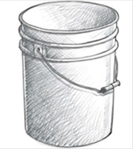

Activity 2.5
Draw the following images by using the directed shading technique:
- (a)A tree with three branches (use cross-hatching technique)
- (b)A hand palm (use dotting technique)
- (c)A hand palm (use hatching technique)
Exercise 2.5
One of the significances of applying shading in drawing is to add an illusion of depth. Explain how smudging technique differ from scribbling.
Imagine your fellow student intended to draw an egg but she drew the oval shape with no form. With an example of a drawing, explain how you will help him/her transform the shape into the form of an egg.
Error correction and refinement
This is the final stage or step in the drawing activity. At this stage, a drawing is closely compared to an actual subject(s) or object that a drawing has copied. An artist has to ensure that a complete drawing shows the best results through correcting all errors by adding or erasing unwanted details. Figure 2.27 shows an example of a final drawing stage.

Figure 2.27: An example of a final drawing stage